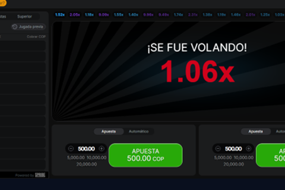
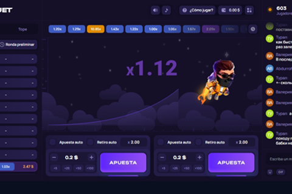
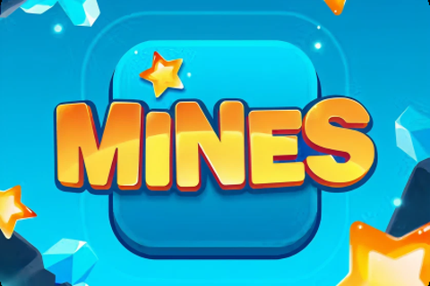
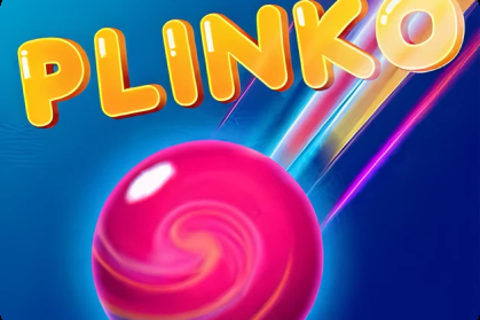

What 1win is and how this guide approaches it
1win is an online entertainment brand that typically combines sports betting, casino-style games, live tables, and fast-paced crash titles in one account. This English-language guide for readers looking at Argentina-facing availability explains how to evaluate the product calmly, what to check before depositing, and where to find deeper pages on casino play, the mobile app, login hygiene, bonus codes, Aviator-style games, and local legality questions. Nothing here is financial advice, and nothing promises a favourable betting result.

Affiliate disclosure: some outbound links on this site may be partner links. If you register through them, we may earn a commission at no extra cost to you. That relationship does not change our editorial standards; we still describe risks, verification steps, and responsible-play habits plainly. Always read the operator terms on the official site before you act.
Readers often arrive with one product question and leave without a framework for judging the whole platform. Our approach maps product areas, lists evaluation criteria you can apply yourself, and points you to specialised articles. For casino categories see 1win casino; for mobile use see the 1win app page; for account access see 1win login.
Because offerings, payment rails, and promotional rules change, treat marketing banners as provisional until confirmed in the cashier and terms. Licensing claims, game catalogues, and country availability should be verified on the operator site and against local rules that apply to you in Argentina. We do not invent licence numbers, RTP percentages, or provider rosters.
Product areas you will usually see
Most multi-vertical brands organise the lobby into sports, casino, live casino, and instant or crash games. Understanding those buckets helps you navigate without chasing every novelty title on the home carousel.
| Area | What it usually covers | What to check yourself |
|---|---|---|
| Sports | Pre-match and in-play markets on football and other sports | Market rules, settlement timing, and cash-out availability if offered |
| Casino | Slots and other RNG titles in a searchable lobby | Game information screens, stake limits, and demo availability if present |
| Live casino | Dealer-hosted tables streamed in real time | Connection stability needs and table limits shown in the lobby |
| Crash / instant | Short-round games with a rising multiplier and cash-out choice | Volatility and session limits before you stake |
Sportsbooks reward people who read market rules carefully. Casino lobbies reward people who open the information panel before staking. Live tables add latency and connection quality as practical factors. Crash games add a timing decision that is still governed by chance, not by a method that removes the house edge.
- Browse sports markets only after you understand how the specific market settles.
- Open casino game info panels instead of judging titles by artwork alone.
- Test live streams on a stable connection before raising stakes.
- Treat crash titles as high-variance entertainment, not a budgeting tool.
- Use history and limit tools if the operator provides them.
For a deeper casino walkthrough, continue to 1win casino. For crash mechanics, read 1win aviator. For Argentina-specific framing, see 1win argentina and is 1win legal in argentina.
12 popular 1win games at a glance
Below is a quick map of titles and formats readers often look up around 1win. Icons are illustrative; lobby catalogues change, so always confirm the live game list, rules panel and stake limits in your own account before you play. 18+ only.

Aviator
Open on 1winA rising-multiplier round where you choose when to cash out before the flight ends. Fast sessions reward pre-set stake limits more than gut timing.

Lucky Jet
Open on 1winAnother short crash-style format with a climbing multiplier and an exit button. Treat streak screenshots as highlights, not evidence of a repeatable pattern.

Mines
Open on 1winGrid reveals where each safe tile raises the multiplier and a mine ends the round. Fewer mines look calmer but still sit inside a house-edged math model.

Plinko
Open on 1winA ball drops through pegs into multiplier slots. Row count and risk setting reshape the paytable; they do not let you steer individual bounces.
Balloon
Open on 1winInflate for a higher multiplier or cash out before a pop ends the try. One more pump is a volatility choice, not a skill guarantee.

Penalty Shoot Out
Open on 1winQuick football-themed rounds that settle on a shot outcome. Read the on-screen rules for how kicks are scored before raising stakes.

JetX
Open on 1winCrash-family gameplay with a jet theme and cash-out control. Connection quality matters because delayed taps can miss your intended exit.
Poker
Open on 1winLobby poker variants with fixed table rules and blinds. Check game type, rake disclosure if shown, and whether you are in cash or tournament mode.

Live Roulette
Open on 1winDealer-hosted wheel rounds streamed in real time. Outside bets usually swing less than single-number wagers; table limits still apply either way.
Blackjack
Open on 1winCard totals versus the dealer under published table rules. Side bets change volatility; open the rules panel before assuming classic payouts.

Slots
Open on 1winReel games filtered by theme, features and stake size in the casino lobby. Use the info screen for paylines and features instead of artwork alone.
Football betting
Open on 1winPre-match and in-play football markets inside the sportsbook. Settlement depends on each market’s rules—read them before same-game parlays.
Want depth on crash titles? Continue to 1win aviator. For lobby navigation overall, see 1win casino.
How to evaluate an operator calmly
Evaluation is a process, not a slogan. Start with identity and access: confirm you are on a genuine domain and that login pages are not mirrored by phishing copies. Next, confirm age gates and eligibility where you live. Then inspect payments at a high level without assuming speeds or fees until the cashier displays them for your account.
- Confirm the domain and avoid links from unsolicited messages or social DMs.
- Read age and eligibility notices; real-money play is for adults 18+ only.
- Open the cashier and note methods shown to you personally.
- Locate responsible-gambling tools: limits, reality checks, time-outs, self-exclusion.
- Skim terms for bonuses, dormant accounts, and verification before a large deposit.
- Keep records of deposits, bets, and support tickets for your own clarity.

Separate marketing language from operational facts. Marketing highlights entertainment and promotions; operational facts live in the cashier, KYC flows, and written terms. When those disagree, the written terms and the on-screen cashier usually govern.
Ratings on review sites—including any ratings we display—are opinions built from clarity of information, tool availability, and ease of finding help. They are not predictions of personal results. Affiliate disclosure applies wherever partner links appear near ratings or product mentions.
Safety checklist before you deposit
Safety here means operational caution: protecting credentials, understanding that gambling can be harmful, and verifying claims rather than trusting banners. It does not mean outcomes become predictable.
| Check | Why it matters | Where to look |
|---|---|---|
| Official access path | Reduces phishing risk | Bookmarked URL or operator communications you already trust |
| Age 18+ confirmation | Legal and ethical minimum | Registration and account settings |
| Payment method ownership | Avoids third-party deposit disputes | Cashier and bank or wallet statements |
| Bonus terms skim | Wagering and weighting affect withdrawals | Promotions page and full T&Cs |
| Session budget | Keeps entertainment spending bounded | Your bankroll plan plus operator limit tools |
- Never share one-time codes or passwords with anyone claiming to be support.
- Prefer unique passwords and a password manager.
- Enable two-factor authentication if the account settings offer it.
- Set deposit or loss limits early, not after a difficult session.
- Stop and seek help if play stops feeling like entertainment.
For login-specific warnings, use 1win login. For promotional caveats, see bonus code 1win guidance. Offers can include wagering, minimum deposits, expiry windows, and game weighting—always check the operator T&Cs rather than relying on summaries.
Argentina English guide positioning
This site is written in British English for readers who prefer English copy while considering Argentina-facing availability. Language preference does not replace local compliance: you must still confirm whether online gambling products are lawful for you where you live, and whether the operator accepts customers from your location. Rules can change; we are not a law firm and this is not legal advice.
| Page | Primary focus | Start here if you need |
|---|---|---|
| Home | Brand overview and evaluation framework | A map of the whole site |
| Casino | Lobby categories, live play, KYC overview | Game types and payments at a high level |
| App | Mobile versus browser, permissions, updates | Install and hygiene questions |
| Login | Access steps, 2FA, phishing, recovery | Account access problems |
| Bonus code | How codes and wagering concepts work | Promotion literacy |
| Aviator | Crash mechanic explained responsibly | Crash-game behaviour |
British English spelling appears throughout (organise, favour, licence as a noun, behaviour). We avoid hype language and do not claim that 1win holds a UK Gambling Commission licence. If an operator page mentions a licence from any jurisdiction, treat that as a claim to verify on official registers and on the operator’s own disclosures.
- Use English pages here for clarity, then confirm local UI strings on the live site if that is what your account shows.
- Cross-check payment methods in the cashier for your region rather than assuming a global list.
- Read 1win argentina for geo-focused notes and is 1win legal in argentina for an informational checklist.
- Return to this homepage when you need the product map again.

Each specialist page covers one job. The homepage’s job is orientation while reminding you that entertainment spending should stay within means and that adults only may participate.
Practical next steps and responsible mindset
If you continue exploring, pick one path at a time. New account holders often benefit from learning the cashier and limit tools before chasing promotions. Sports-focused readers should learn market rules. Casino-focused readers should learn lobby filters. Mobile-first readers should compare the 1win app with the mobile browser before granting unnecessary permissions.
- Decide a session budget in advance and treat it as a cost of entertainment.
- Avoid chasing losses; take breaks after sharp swings either way.
- Keep credentials away from minors; accounts are for adults 18+ only.
- Use support channels listed on the official site, not contacts from random chats.
- Re-read terms when a promotion looks unusually attractive.
We emphasise verification over rumour. Mirror sites, unofficial APKs, and so-called predictor tools for crash games are common sources of account and device risk. Stick to official download paths described on the operator site. Feature parity between app and desktop can differ by release—confirm in the live product.
House-edged games are designed so that, over a long enough sample, the operator’s edge applies. Short sessions can finish ahead or behind; neither result proves a method. Keep expectations honest so you can enjoy the product—or walk away—on your own terms.
Product-area map you can reuse on any visit
Whether you open sports, casino, live tables or crash titles, keep the same mental map: entertainment first, verification second, stake size third. The diagram below summarises the product buckets most multi-vertical brands expose inside one account.
- Sports needs market-rule literacy before kick-off or tip-off.
- Casino lobbies need info-panel reading before the first spin.
- Live tables add connection quality as a practical factor.
- Crash titles add a cash-out timing decision that does not remove house edge.
| Check | What good looks like | Red flag |
|---|---|---|
| Domain authenticity | Typed or bookmarked official URL | Links from cold DMs or pop-ups |
| Age gate | Clear 18+ requirement before play | No age notice anywhere |
| Responsible tools | Deposit/loss/time limits visible | No limit controls at all |
| Terms access | Bonus and account terms linked near offers | Promo claims without T&Cs |
Evaluation sequence before any deposit
A calm sequence beats improvisation. Work left to right through domain authenticity, age eligibility, cashier visibility, limit tools and written terms. Skipping a step is how phishing pages and misunderstood bonuses slip through.
- Confirm you are on a genuine domain.
- Confirm you meet the 18+ requirement where you live.
- Open the cashier and note methods shown to your account.
- Locate deposit, loss and time-limit tools if offered.
- Read bonus and account terms before accepting any offer.
| Parameter | Safer habit | Why |
|---|---|---|
| Bankroll | Set a loss limit before opening the lobby | Stops chase behaviour mid-session |
| Time | Use a reality-check or phone timer | Short rounds compress time perception |
| Games | Pick one product area per session | Reduces impulsive switching |
Responsible gambling
18+. Casino games, sports betting and crash titles discussed on this site are intended for adults aged 18 and over only. Gambling can be addictive - please play responsibly and never stake more than you can afford to lose.
- International support information: BeGambleAware.
- Advice and treatment resources: GamCare.
- If you are in Argentina, also look for locally available counselling and helpline resources through public health channels, and use any deposit/loss/time limits the operator provides.
1win Argentina Guide publishes informational reviews and checklists. We do not invent licence numbers or claim UK Gambling Commission status for operators without verification in data/casinos/. Nothing on this site is financial or gambling advice, and no outcome is promised.